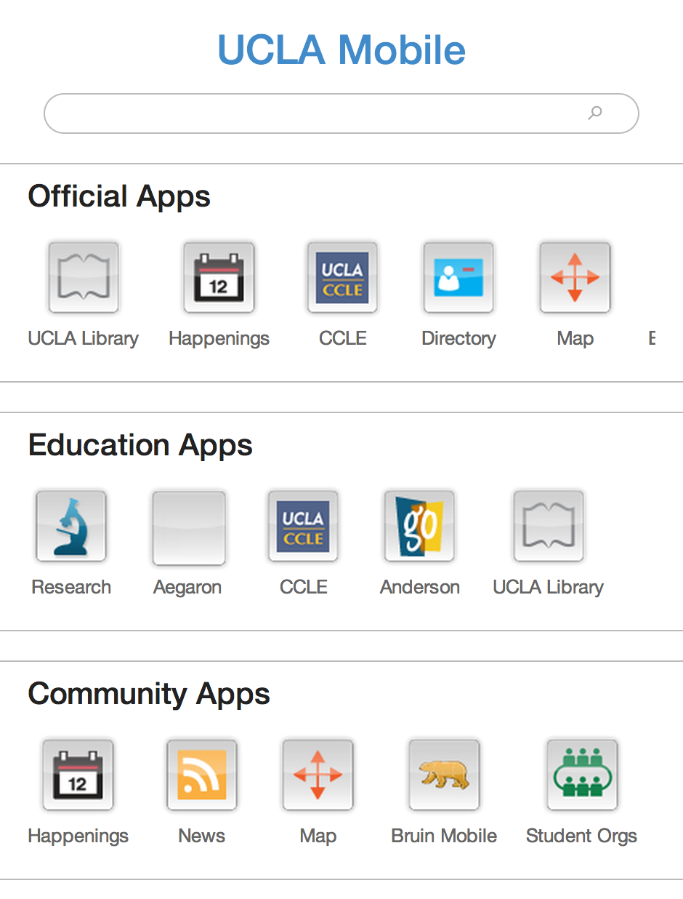
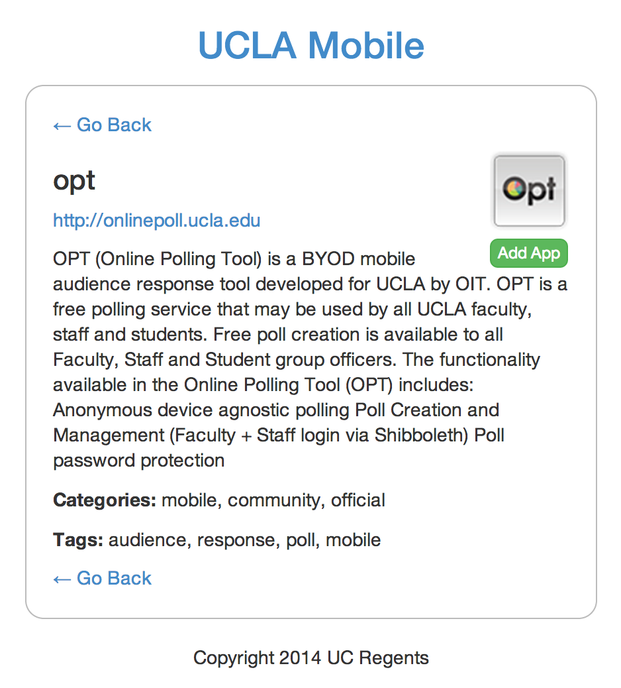

CASA
The Community App Sharing Architecture
Mobile Expectations
Demand for more and more apps
Plentiful
Relevant
Robust
Mobile frameworks make it easy to get going
but how do we enable an ecosystem of apps?
Search Is Not Sufficient
The Word Wide Web is vast and uncurated
Limited ability to identify capabilities and relevancy
Device support
Interoperability
World view
A model that already does this well...
Native App Stores
Web App Stores
Mobile Web Framework
Each organization contacts peers for apps
1/2*N*(N-1) connections for complete
Edu-Apps.org
Aggregator as central repository for apps
Homogeneous world view and trust
Modeling the Real World
Peer with others
Discover apps
Share apps
Relay apps
An Institutional App Store
Leverage common interface patterns
Search and browse to find apps
One-click installation (where possible)
Model our decision-making processes
Filter apps based on properties
Transform and journal attributes
Enable an ecosystem of apps
Local decisions to curate our ecosystem
while being part of a larger community
Demo





CASA on Campus
Will soon replace the m.ucla.edu landing page
Greater personalization
More choices
Use cases beyond mobile
Learning tools
Native apps
APIs
CASA Beyond the Campus
UCLA
IMS Global Learning Consortium
University of California System
Higher Ed & EdTech Partners